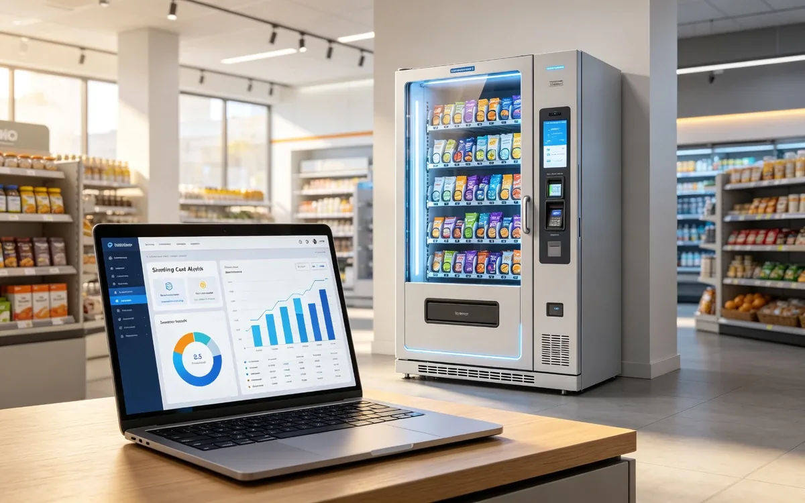

How Much Does AI Vending Cost?
AI vending costs $6,000 to $15,000 per unit upfront plus $20 to $80 per machine monthly in software, payment, and connectivity fees.

Quick answer
| Cost item | Typical range |
|---|---|
| Hardware (per unit) | $6,000 to $15,000 |
| Software platform | $10 to $40 per month |
| Payment processing | 2 to 5 percent of sales |
| Connectivity | $5 to $20 per month |
| Installation and setup | $300 to $1,000 |
| Restocking labor | Varies by route |
Hardware cost drivers
- Size and cooling: larger refrigerated units cost more than dry shelves.
- Recognition stack: vision-only units differ in price from units with additional sensors.
- Brand and warranty: established vendors often price higher with better support.
Monthly costs
Software, payment, and connectivity usually total $20 to $80 per machine per month. Payment processing scales with sales, so high-revenue machines pay more in fees but earn more overall.
Hidden costs
- Shipping and customs for imported hardware.
- Power consumption for refrigerated units.
- Spare parts and service contracts.
- Restocking labor and product spoilage.
How to budget
- Pick 2 to 3 candidate units and request itemized quotes.
- Add 20 percent buffer for shipping, install, and first-month setup.
- Model 36-month total cost, not just the sticker price.
- Include a pilot phase before fleet expansion.